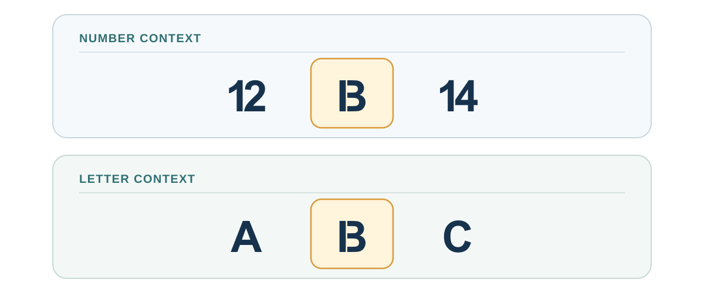
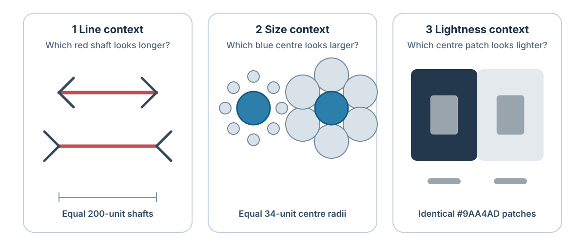
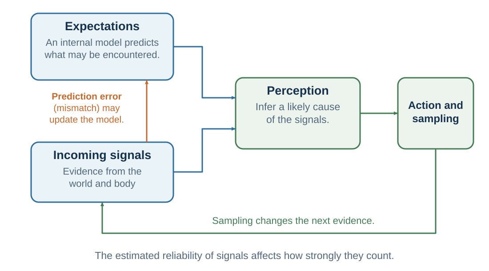

4 The Predictive Mind: Perception Is Inference
Perception is inference constrained by sensory evidence
“Perceptions may be compared with hypotheses in science.”
— Richard L. Gregory, “Perceptions as Hypotheses”, 1980, p. 181
Learning goals
- Explain perception as inference rather than recording.
- Describe priors, sensory evidence, prediction error, and precision in plain language.
- Distinguish perceptual prediction from a decision forecast, and specify an observation that could distinguish two competing interpretations.
If perception is not complete sensory recording, what is it?
A powerful answer is that perception is inference. The brain uses incomplete sensory evidence to infer the most likely causes of that evidence. This idea goes back at least to Helmholtz, who described perception as unconscious inference (Helmholtz, 1867/1962). Later work in psychology and cognitive science developed this idea through theories of constructivist perception, Bayesian perception, and predictive processing (Gregory, 1980; Kersten et al., 2004; Knill & Richards, 1996; Rock, 1983). Evidence that perception is context-sensitive and inferential does not uniquely establish one predictive-processing implementation in the brain; predictive processing is an influential family of theoretical accounts for how such inference might be organized.
The brain does not simply ask, “What light hit the retina?” It asks, in effect, “What in the world is most likely to have caused this pattern of light?” The answer depends on sensory evidence, but also on context, prior experience, expectations, goals, and assumptions about how the world usually works.
Two meanings of prediction
The word prediction creates a possible confusion. Predictive processing and decision science use the same word for related but different functions.
| Use of prediction | Meaning in this book |
|---|---|
| Prediction in predictive processing | An internal model anticipates sensory signals or infers their hidden causes. A mismatch between expected and incoming signals can alter perception or update the model. |
| Prediction in judgment and decision-making | A person or model forecasts a state or consequence that may occur, often under a specified option and time horizon. The forecast becomes one input into valuation and choice. |
The first asks, in effect, “What is producing the signals I am receiving?” The second asks “What is likely to happen if this option is chosen?” Both use prior information and uncertainty, but they predict different objects and are evaluated against different evidence. A theory of perceptual inference does not by itself forecast hospital readmission, estimate a project’s probability of success, or determine whether an outcome is desirable.
This chapter stays with the first meaning: how internal models help construct perception and guide sampling. Chapter 5 examines consequence forecasts and expectations that alter behavior and outcomes; Chapters 14 and 15 develop disciplined probability judgment and calibration; and Chapter 41 separates machine prediction from valuation, intervention, decision, and responsibility.
One proposed evolutionary map asks how model-building capacities accumulated. Bennett (2021, 2023) uses simulating for model-based rehearsal of possible actions and outcomes, the third of five proposed breakthroughs in the lineage leading to humans. This is not the same construct as sensory prediction in predictive processing, and Bennett’s first-approximation phylogeny does not establish that predictive processing is the brain’s unique computation. Appendix B maps the full sequence and its evidentiary limits.
Illusions are useful because they hold parts of the signal constant while changing the context or prior that gives it meaning. Equal luminance can look different when one patch is interpreted as lying in shadow (Adelson, 2000); the same shading can imply a bump or dent because light is usually expected from above (Ramachandran, 1988); and synchronized visual and tactile signals can alter experienced body ownership (Botvinick & Cohen, 1998). These demonstrations do not prove one neural implementation. They establish the narrower point needed here: sensory input underdetermines interpretation, so learned assumptions help resolve it.
This is adaptive. If perception required complete data, action would be too slow. Priors allow the brain to act quickly in uncertain environments. But priors can also mislead.
A person afraid of spiders may perceive a spider as larger or more threatening than another person would. Research suggests that fear and desire can influence perceptual judgments of distance, size, and slope, although the interpretation of such effects remains debated (Balcetis & Dunning, 2010; Proffitt, 2006; Stefanucci & Proffitt, 2009). A person with social anxiety may interpret neutral expressions as hostile. A medical student who has just learned about a disease may notice normal bodily sensations and interpret them as symptoms. A manager expecting resistance may perceive questions from employees as opposition rather than curiosity.
Perception is constrained by the world, but not dictated by it. It is neither pure reality nor pure imagination. It is a controlled construction: a best guess, shaped by evidence and prior models.
This has a major implication for disagreement. People who disagree may not be “looking at the same thing” in the psychological sense. They may receive similar sensory input but interpret it through different models. One person sees a risky disruption; another sees an opportunity. One sees disrespect; another sees honesty. One sees a vague proposal; another sees flexibility. One sees a suspicious pause in a negotiation; another sees careful thought.
Better decisions require not only better data, but better awareness of the models through which data are interpreted.
Classic ambiguity stimuli—the B/13 figure, duck–rabbit, an object seen as squirrel or alligator, and context or music that tilts interpretation—make this point visually. The same inference can be recreated in conversation: one person hears “That is an interesting proposal” after a cooperative exchange; another hears it after a tense rejection. Ask each person to predict the speaker’s next action before explaining the phrase. The words are held constant while the prior model changes, making the inferential mechanism inspectable without treating any illusion as proof that perception is unconstrained.

Figure 4.1 holds the sensory mark fixed while changing only its neighbors. If your reading changes, the figure has exposed an interpretive contribution from context. It has not measured how often this happens, identified the responsible neural computation, or shown that perception is unconstrained by evidence.
The same teaching logic works when the target can be measured directly. In Figure 4.2, the paired shafts, centre circles, and grey patches are physically identical within each comparison. The surrounding geometry or luminance changes their appearance. Measuring the target can correct the judgment without necessarily turning off the impression.

Prediction, error, and precision

Figure 4.3 shows a teaching synthesis of the loop proposed across predictive-processing accounts. Read it clockwise: an internal model predicts sensory signals; perceptual inference estimates their hidden causes from expectations and incoming evidence; action changes the environment and what is sampled next; prediction error can then update the model. Precision is the system’s estimate of how reliable a prediction-error signal is, and therefore how much influence that signal should have on updating. Some accounts model part of attention through precision assignment (Feldman & Friston, 2010), but attention and precision are not interchangeable, and predictive-processing variants differ in their scope and proposed implementation. The figure is a theoretical architecture, not a direct image of neural circuitry (Clark, 2013; Friston, 2010; Rao & Ballard, 1999).
The idea that perception is inference becomes more specific in predictive processing. Predictive processing theories propose that the brain generates predictions about sensory input and updating those predictions when errors occur (Clark, 2013; Friston, 2010; Hohwy, 2013; Rao & Ballard, 1999). The brain does not wait passively for the world to arrive on this account. Prediction is compared with incoming evidence, and the model may be revised when mismatch matters.
Two objects must be kept separate. The generative process is the world and body that actually produce observations. The generative model is the agent’s probabilistic model of how hidden states could produce those observations. The process contains the moved chair; the model contains beliefs about kitchens, locations, vision in low light, and how observations depend on objects. A model can fit familiar data and still represent the process badly.
The generative model produces predictions about what should be seen, heard, felt, or experienced. Incoming signals are compared with those predictions. The mismatch is called prediction error.
If prediction error is small, the model is working well enough. If prediction error is large and reliable, the brain updates its beliefs or directs action to reduce the mismatch.
For example, when you walk into your kitchen at night, your brain predicts the location of furniture, the feel of the floor, and the likely appearance of objects. You do not need to reconstruct the room from scratch. But if a chair has been moved, your foot bumps into it. Prediction error occurs. You update: the chair is not where expected.
Predictive processing offers one account of why perception is fast: the system need not treat every detail equally, and can allocate processing to what is surprising, uncertain, or important. This can be efficient and can also make inference vulnerable to expectation. Other computational and neural accounts can explain some of the same observations.
Attention plays a central role in predictive processing. In this framework, attention can be modeled partly as the assignment of precision to prediction errors (Feldman & Friston, 2010). Precision means the estimated reliability or importance of a signal. If a sensory signal is treated as precise, it has more influence on updating perception. If it is treated as noisy or irrelevant, it has less influence. This is a framework-specific proposal, not a general definition of attention or a uniquely established neural mechanism.
This idea helps explain why attention changes perception. If you are listening for your name in a noisy room, speech sounds related to your name receive high precision. If you are searching for a typo, letter-level details become more precise. If you are afraid of threat, threat cues receive more precision. If you are motivated to defend a belief, evidence consistent with that belief may receive more weight than evidence against it.
When inner models help—and when they stop learning
Inner models are not defects. They make perception usable. Reading requires models of letters, words, and grammar; crossing a street requires expectations about vehicles, signals, and speed. Expertise develops when repeated experience builds models that detect meaningful patterns. A radiologist sees structure in an image that a novice cannot, and an experienced firefighter may notice that a fire is behaving abnormally.
Models also determine what can be noticed. An organization without a concept of psychological safety may interpret silence as agreement. A manager without a model of incentive conflict may explain strategic behavior as personality. A student without the concept of opportunity cost may see only the chosen benefit and not the best alternative forgone. Better concepts can make previously invisible features of a decision visible.
But a useful model stops learning in three common ways:
- The prior becomes too rigid. Ambiguous evidence is repeatedly interpreted in the expected direction.
- Precision is assigned selectively. Confirming signals are treated as diagnostic while disconfirming signals are dismissed as noise. Emotion, identity, and incentives can influence this weighting.
- Action protects the model. Avoidance, micromanagement, underinvestment in testing, or failure to ask diagnostic questions prevents informative feedback.
More information is therefore not automatic correction. A signal changes the model only if it enters attention, is treated as sufficiently reliable, and can be integrated into the current account. If it is dismissed as irrelevant or noisy, the model may survive unchanged.
Calibration therefore requires more than confidence. Ask:
- What am I expecting to see?
- Which observation would be more likely if my model were wrong?
- Why am I treating one signal as reliable and another as noise?
- What alternative model explains the same evidence?
- What feasible action would test the model rather than protect it?
These questions prepare the way for later chapters on heuristics, belief protection, framing, and probability judgment. Many errors begin before a final choice, in what attention selects and what the current model makes plausible.
Research Lens: calibration in complex cases
Unusual cases can make the ordinary architecture visible, but only if we resist forcing them into one explanation. The cases below do not share one proven neural mechanism. They illustrate four different ways in which learned models, present sensory evidence, and estimated reliability can become difficult to coordinate.
| Case | What the case makes visible | What the evidence does not justify |
|---|---|---|
| Restored sight | Optical input can return before objects, faces, depth, and cross-modal mappings become a coherent visual world. Newly sighted participants initially struggled to match a seen object with one known by touch, then learned rapidly (Held et al., 2011). | “The eye now works, so mature perception is immediately restored.” Case histories also mix prior experience, residual impairment, development, and rehabilitation. |
| Functional visual symptoms | A person can sincerely report severe visual loss even while positive tests show that parts of visual processing remain available. Explanation, attention to residual function, and rehabilitation can help (Yeo et al., 2019; Ramsay et al., 2024). | Functional neurological symptoms are faking, imaginary, or established as one simple case of an overstrong prior. A case treated with several interventions cannot identify one causal ingredient. |
| Conditioned hallucinations | After learning that a checkerboard predicts a faint tone, people may report the tone on no-tone trials. This effect was more frequent among participants who heard voices in everyday life (Powers et al., 2017). | Schizophrenia is reducible to a single “faulty model.” Predictive-coding accounts of psychosis involve different levels, symptoms, learning histories, dopamine-related processes, and social contexts (Sterzer et al., 2018). |
| Autism and visual context | Susceptibility to some illusions and use of some learned priors can differ across people and tasks. A large review finds mixed results rather than a global absence of prior knowledge (Angeletos Chrysaitis & Seriès, 2023). | Autistic perception contains “no models,” is uniformly less contextual, or is simply better or worse. Long-established and newly learned priors may behave differently. |
The target is therefore not perception with fewer predictions. Without learned structure, sensory signals do not organize themselves into a usable world. Nor is the target prediction that overrides every mismatch. A calibrated system uses priors to interpret incomplete input, weights current evidence by its reliability, and remains capable of updating when persistent error deserves trust.
The chapter’s main message can now be stated compactly: perception depends on models that make ambiguous signals usable, and those models improve only when credible error is allowed to change them. The goal is not to remove prior expectations, but to make their influence testable and their updating proportionate to evidence.
Practice Lab
Choose a disagreement in which two people received similar information but inferred different situations. Produce a two-model test: state each person’s prior model, identify the signal each treated as most precise, and name one feasible observation that would be expected under one model but not the other. End by stating what action would follow from each possible result.
Take it forward
- Use this when: people agree on the raw event but disagree about what it means or what will happen next.
- Do not infer: that every perception is arbitrary, that prediction identifies causation, or that a flexible predictive-processing vocabulary explains a case without testable commitments.
- Try this next: write the observation that would make your preferred model lose ground before collecting more evidence.
References cited in this chapter
Adelson, E. H. (2000). Lightness perception and lightness illusions. In M. Gazzaniga (Ed.), The new cognitive neurosciences (2nd ed., pp. 339–351). MIT Press.
Angeletos Chrysaitis, N., & Seriès, P. (2023). Ten years of Bayesian theories of autism: A comprehensive review. Neuroscience & Biobehavioral Reviews, 145, 105022.
Balcetis, E., & Dunning, D. (2010). Wishful seeing: More desired objects are seen as closer. Psychological Science, 21(1), 147–152.
Bennett, M. S. (2021). Five breakthroughs: A first approximation of brain evolution from early bilaterians to humans. Frontiers in Neuroanatomy, 15, 693346. https://doi.org/10.3389/fnana.2021.693346
Bennett, M. S. (2023). A brief history of intelligence: Evolution, AI, and the five breakthroughs that made our brains. Mariner Books.
Botvinick, M., & Cohen, J. (1998). Rubber hands “feel” touch that eyes see. Nature, 391(6669), 756.
Clark, A. (2013). Whatever next? Predictive brains, situated agents, and the future of cognitive science. Behavioral and Brain Sciences, 36(3), 181–204.
Da Costa, L., Parr, T., Sajid, N., Veselic, S., Neacsu, V., & Friston, K. (2020). Active inference on discrete state-spaces: A synthesis. Journal of Mathematical Psychology, 99, 102447.
Feldman, H., & Friston, K. J. (2010). Attention, uncertainty, and free-energy. Frontiers in Human Neuroscience, 4, Article 215.
Friston, K. (2010). The free-energy principle: A unified brain theory? Nature Reviews Neuroscience, 11(2), 127–138.
Friston, K., Rigoli, F., Ognibene, D., Mathys, C., Fitzgerald, T., & Pezzulo, G. (2015). Active inference and epistemic value. Cognitive Neuroscience, 6(4), 187–214.
Friston, K. J., FitzGerald, T., Rigoli, F., Schwartenbeck, P., & Pezzulo, G. (2017). Active inference: A process theory. Neural Computation, 29(1), 1–49.
Gregory, R. L. (1980). Perceptions as hypotheses. Philosophical Transactions of the Royal Society of London. Series B, Biological Sciences, 290(1038), 181–197.
Held, R., Ostrovsky, Y., de Gelder, B., Gandhi, T., Ganesh, S., Mathur, U., & Sinha, P. (2011). The newly sighted fail to match seen with felt. Nature Neuroscience, 14(5), 551–553.
Helmholtz, H. von. (1962). Treatise on physiological optics (J. P. C. Southall, Trans.). Dover. (Original work published 1867)
Hohwy, J. (2013). The predictive mind. Oxford University Press.
Kersten, D., Mamassian, P., & Yuille, A. (2004). Object perception as Bayesian inference. Annual Review of Psychology, 55, 271–304.
Knill, D. C., & Richards, W. (Eds.). (1996). Perception as Bayesian inference. Cambridge University Press.
Parr, T., Pezzulo, G., & Friston, K. J. (2022). Active inference: The free energy principle in mind, brain, and behavior. MIT Press.
Powers, A. R., III, Mathys, C., & Corlett, P. R. (2017). Pavlovian conditioning-induced hallucinations result from overweighting of perceptual priors. Science, 357(6351), 596–600.
Proffitt, D. R. (2006). Embodied perception and the economy of action. Perspectives on Psychological Science, 1(2), 110–122.
Ramsay, N., McKee, J., Al-Ani, G., & Stone, J. (2024). How do I manage functional visual loss? Eye, 38(12), 2257–2266.
Ramachandran, V. S. (1988). Perception of shape from shading. Nature, 331(6152), 163–166.
Rao, R. P. N., & Ballard, D. H. (1999). Predictive coding in the visual cortex: A functional interpretation of some extra-classical receptive-field effects. Nature Neuroscience, 2(1), 79–87.
Rock, I. (1983). The logic of perception. MIT Press.
Sterzer, P., Adams, R. A., Fletcher, P., Frith, C., Lawrie, S. M., Muckli, L., Petrovic, P., Uhlhaas, P., Voss, M., & Corlett, P. R. (2018). The predictive coding account of psychosis. Biological Psychiatry, 84(9), 634–643.
Stefanucci, J. K., & Proffitt, D. R. (2009). The roles of altitude and fear in the perception of height. Journal of Experimental Psychology: Human Perception and Performance, 35(2), 424–438.
Yeo, J. M., Carson, A., & Stone, J. (2019). Seeing again: Treatment of functional visual loss. Practical Neurology, 19(2), 168–172.